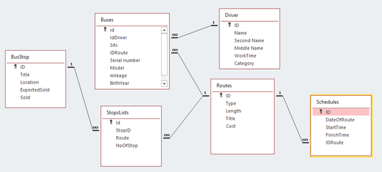

Варіант-8. Предметна область - "Розклад руху автобусів; "

На Даталогічній моделі уже можна побачити, що БД була нормалізована до НФ3, усюди уснують первинні ключі, всі атрибути
від них залежать та немає транзитивних залежностей. Аналізуючи атрибути моделі не було знайдено явних порушень.